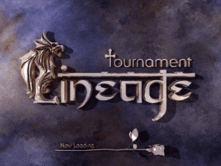
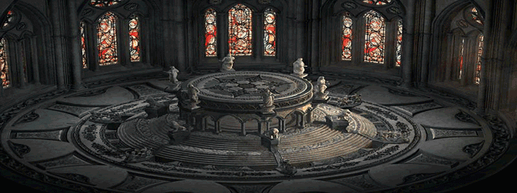
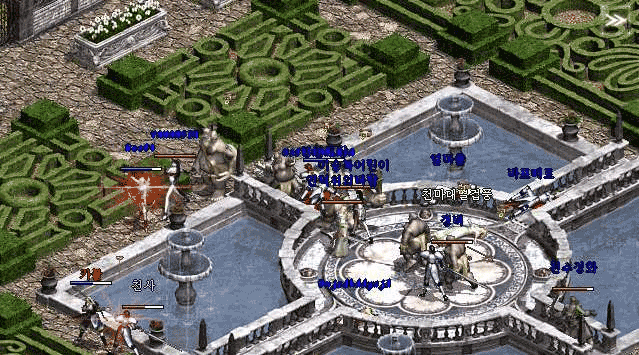

|
2002年10月2日
Lineage Tournament 天堂對決賽
來源：Jude1004.com

NCsoft代表金澤辰公佈他們正在開發專為天堂對決而設的遊戲模式Lineage Tournament，預計約在十一月中旬推出。遊戲形式和早前舉行的Lineage World Championship差不多，玩家在可以使用目前的角色去組隊（最多八人一組）及進行生死決鬥(Death Match)、榮耀之戰(Honor Match)或任務對決(Quest Battle)，情況就像大家在Battle Net上玩StarCraft或WarCraft 3差不多。他們預計在11月14日會開放2個伺服器作為示範之用，而在明年初則全面開放。

 |